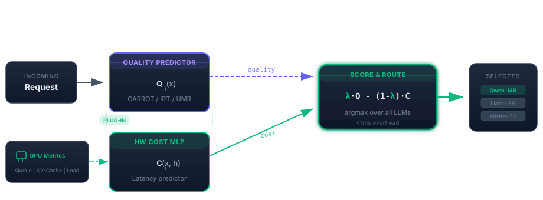

HW-Router dynamically selects the best LLM for each request based on both predicted response quality and real-time hardware conditions — achieving near-perfect SLO attainment without sacrificing throughput.
Evaluated on 5 LLMs across 2 NVIDIA H100 GPUs under realistic traffic patterns.
| Router | Avg Quality ↑ | Avg Latency (s) ↓ | SLO Attainment (E2E) ↑ |
|---|
Note on quality: HW-Router's lower average quality (0.606 vs 0.657–0.669) is intentional. Quality-only routers always pick the largest model regardless of server load, causing latency spikes and missed SLOs. HW-Router trades a small quality reduction for a 3.4× latency improvement and near-perfect SLO attainment.
Configure HW-Router, pick a baseline to compare, then drag λ to move the highlighted point along the Pareto curves.
The hardware cost predictor is a plug-in component. Any quality predictor (CARROT, IRT, UMR, or future ones) can be made hardware-aware simply by swapping the static cost term for our MLP.

If you use HW-Router in your research, please cite our paper.
@inproceedings{kabir2026hwrouter,
title = {{HW-Router}: Hardware-Aware Routing for Scalable Multi-{LLM} Serving},
author = {Kabir, Ahasan and Xue, Jiaqi and Zheng, Mengxin and Lou, Qian},
booktitle = {Proceedings of the 63rd Design Automation Conference (DAC)},
year = {2026}
}